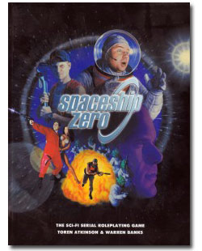

Words, I write them.
I have been writing, in one form or another, for years now. Not just as necessary for day-to-day stuff like shopping lists and basic email exchanges, but proper use of the language to achieve goals. Here are a few highlights from my past, as well as some information about what I'm doing as a copywriter over at TBA Digital.
Copywriter at TBA Digital
Over at TBA Digital I am part of the team that creates high-quality multimedia productions. From video presentations to Flash-based educational software, high-level visual design and branding, HD video works, interactive training modules, and full-featured websites. My job is to write, create, edit and proof - providing input on creative direction for the incredibly talented artistic and technical teams who bring things to life in glorious colour and motion.
TBA Digital does it all, with class and style, and it's a pleasure to be working in such a professional environment.
TBA Digital does it all, with class and style, and it's a pleasure to be working in such a professional environment.
Blogging
At the start of my 2011 I set up a blog here and have been posting to it about various things. Mostly chainmail, with some web/flash development thrown in to keep things lively. I'll keep posting, especially now that the UBC workload is over and I'll have more time. Join the fun over at: my blog.
Paradigm Concepts Living Arcanis Game Development
Paradigm Concepts is the tabletop game company behind the world of Arcanis and the world's #2 RPGA campaign setting - Living Arcanis. Following some involvement with them through my Vancouver Gaming Guild organization, I joined their editorial and writing crew.
My contributions to the campaign included thorough technical proofing work on the game mechanics of 'Coils of the Serpent Empire,' developing content with and providing editorial/game-mechanics support to Kimberly Wajer-Scott - lead writer responsible for the Canceri nation and all related books, proofing and well-received editorial contributions to the 'Magic of Arcanis' book, as well as continuing to organize and run events both locally in Vancouver and abroad at conventions and fan-organized events.
My contributions to the campaign included thorough technical proofing work on the game mechanics of 'Coils of the Serpent Empire,' developing content with and providing editorial/game-mechanics support to Kimberly Wajer-Scott - lead writer responsible for the Canceri nation and all related books, proofing and well-received editorial contributions to the 'Magic of Arcanis' book, as well as continuing to organize and run events both locally in Vancouver and abroad at conventions and fan-organized events.
Spaceship Zero - ENnie Award-Winning RPG
|
The Spaceship Zero RPG is a stand-alone tabletop RPG published by Green Ronin in Seattle Washington. It follows the old cult german TV show about the brave crew of the Spaceship Zero, the ship with a star drive that destroys the universe each time it's fired!
Earning an ENnie award at GenCon when it was released, SSZ went on to score critical acclaim and, to this day, continues to be the focus of filmmakes, writers, musicians, and costumers. The Spaceship Zero soundtrack, released by Vancouver band The Darkest of the Hillside Thickets has recently had the song "20 Minutes of Oxygen" turned into a music video. For more informaion on all things Spacecorp, visit: www.spaceshipzero.com |